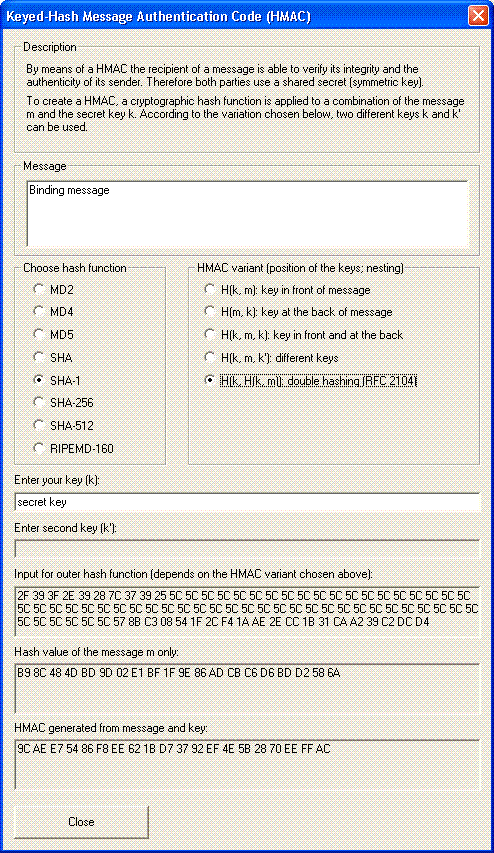

You can reach this dialog via the menu entry Individual Procedures \ Hash \ Generation of HMACs.

With this dialog you can generate the keyed-hash message authentication code (HMAC) of the currently opened document. The generated HMAC is displayed in hexadecimal notation.
You can choose one of the following hash functions: MD2, MD4, MD5, SHA, SHA-1, SHA-256, SHA-512 and RIPEMD-160.
CrypTool contains five HMAC variants (H = hash function, k = key, m = message):
The secret key used for the HMAC generation can be specified in the respective input box. Additionally, one out of five combinations (HMAC variants) of document and key can be chosen. The variable m refers to the message, k and H refer to the key and the hash function, respectively.
The first combination is called "Secret Prefix Method", the second combination is called "Secret Suffix Method". The third and fourth combination are called "Envelope Method" using one or two keys, respectively. Only variant five is specified by a standard (RFC 2104, FIPS PUB 198). This HMAC is calculated via: H ( k XOR opad, H(k XOR ipad, m) ) where ipad = 64 bytes each 0x36, opad = 64 bytes each 0x5C. If the key k is longer than the block length of the hash function, then k will be substituted by H(k). [See Menezes, van Oorschot, Vanstone: Handbook of Applied Cryptography]
All hash functions used here are implemented with OpenSSL.
Remark:
Please note that this demonstration is available for text documents only, and the text length is restricted to 16,000 bytes. Further bytes do not affect the generated HMAC.